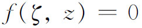
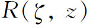
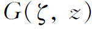
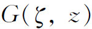
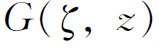
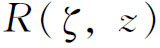
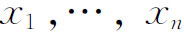
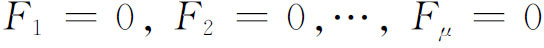
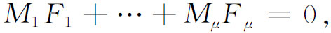
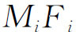

7．算术方法
研究代数曲线的方法，除去超越方法与代数-几何方法之外，还有一个方法叫算术方法，然而它至少在概念上是纯代数的。这个方法实际上是一批理论，它们在细节上大不相同，但在三类阿贝尔积分的被积函数的构造与分析上有共同之点。这个方法是由克罗内克在其讲义(51)中，由魏尔斯特拉斯在其1875年至1876年的讲义中，并由戴德金和海因里希·韦伯在一篇合写的论文(52)中发展出来的。这方法的完整叙述出现于亨泽尔（Kurt Hensel）与兰兹伯格（Georg Landsberg）的教科书《单变量代数函数论》（Theorie der algebraischen Funktionen einer Variabeln，1902）中。
这个方法的中心思想来自克罗内克与戴德金关于代数数的研究工作，并利用代数数域中的整代数数与复函数中在黎曼曲面上的代数函数之间的类比。代数数理论是从整系数不可约多项式方程f（x）＝0出发的。在代数几何上的类比是一个不可约多项式方程

，其中ζ乘幂的系数都是z的多项式（比如说是实系数的）。在数论中可以考虑由f（x）＝0的系数和它的一个根生成的域R（x）。在几何中则考虑所有
形成的域，它们在黎曼曲面上是单值的代数函数。于是考虑数论中的整代数数。与此相应的代数函数
是整函数，即只在z＝∞处变为无穷大的代数函数。整代数数能分解成实的质因子与单位，这分别相应于
能分解成只在黎曼曲面上一点处为零的因子和一些无处为零的因子。戴德金在数论中引进理想以讨论可除性，这在几何上的类比是：把
的一个在黎曼曲面上一点处为零的因子，代之以
的域中所有在该点为零的函数集合。戴德金与海因里希·韦伯用这种算术方法来处理代数函数域，他们得到了经典性结果。希尔伯特继续用戴德金和克罗内克的本质上是代数的或算术的方法进行代数几何的研究(53)，他的一个主要定理希尔伯特的零点定理（Nullstellensatz）说：任意多个齐次变量

的空间内每个任意范围的代数结构（图形），恒能用有限个齐次方程
来表示，使得包含原来那个结构的任意其他结构的方程，都可以表示成

其中各个M都是任意齐次整式，其次数必须如此选择使方程本身的左边是齐次的。
希尔伯特依戴德金称

的集合为模（此名词是今日的理想，而模现在稍更一般些）。于是可把希尔伯特的结果叙述为：Rn的每一个代数结构确定一个为零的有限模。